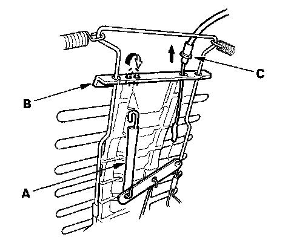
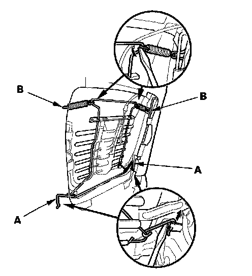
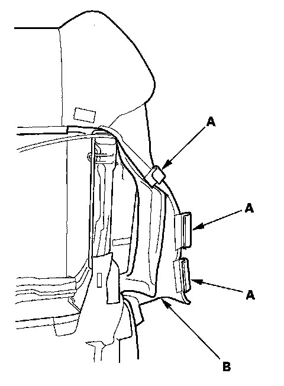
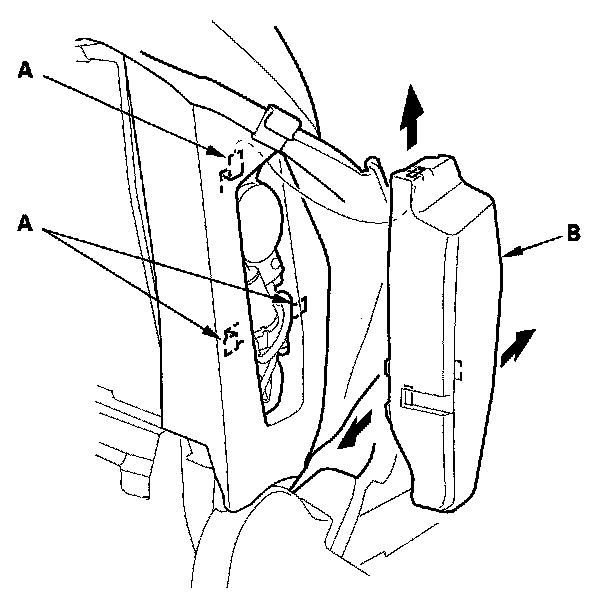
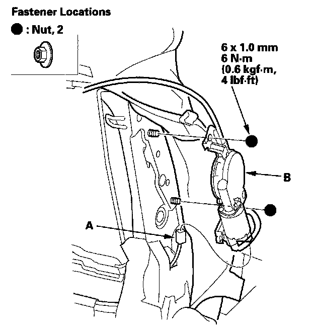

Front Seat Lumbar Support
Front Seat Lumbar Support ReplacementDriver's seat
SRS components are located in this area. Review the SRS component locations and the precautions and procedures before doing repairs or service.
NOTE:
- Put on gloves to protect your hands.
- Take care not to bend the cable.
- Take care not to tear the seams or damage the seat covers.
1. Remove the back panel.

2. Release the hook of the yoke wire (A) from the top of the basket (B) to loosen the lumbar support cable (C), then disconnect it.

3. Release both lower springs (A) from inside the seat-back. Release the lumbar support from both upper springs (B).

4. Release the hook strips (A), then turn over the seat-back cover (B).

5. Release the hooks (A), then remove the lumbar support motor cover (B).

6. Disconnect the power lumbar support motor connector (A) and remove the nuts, then remove the lumbar support motor (B).
7. Install the lumbar support in the reverse order of removal, and note these items:
- Make sure the connector is plugged in properly, and the cable is connected securely.
- To prevent wrinkles when installing a seat-back cover, make sure the material is stretched evenly over the pad before securing the hook strips.
- Replace the back panel clips with new ones.